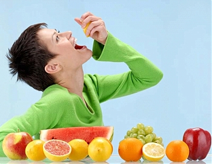

-
Плодовата диета изглежда строга и постническа, но се понася много леко, благодарение на плодовата захар – фруктоза – която удовлетворява даже любителите на сладкиши и шоколад. Заради това за седмица можете а смъкнете 5 или дори 7 кг, без да се терзаете особено.
-
Правилата са много прости: сутрин не се яде (няма страшно, няма да умрете от глад за 2 часа). Може да се пие чай с мед.
-
На обяд и на вечеря се ядат плодове по избор, до 800 гр на ден. Чай с мед пиете когато пожелаете. Изстудена вода с лимон също.
-
Всичко друго е изключено от менюто. На третия ден спирате да чувствате глад. На 5-ия организмът минава на „вътрешен режим” и изяжда всички излишни тлъстини, отрови и болестни клетки.
-
Ефектът е удивителен: подмладяване, витализиране и видимо освежаване.
|

|